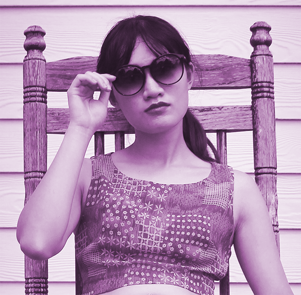

Sept '19 - Feb '21
Compiled style guides, created wireframes/mockups/prototypes, & conducted user testing & journey mapping sessions
About

Bio
Nice to e-meet you,
I'm Thalia (she/her), a User Experience Generalist specializing in UX Design. I have worked in the field of UX Design for 2.5 years.
I thrive most in collaborative, innovative workplaces. My hope is to advocate for users and improve the world in a small way through UX Design.
Skills
Languages
HTML, CSS, JavaScript, jQuery, PHP, SQL
Frameworks
Materialize, Semantic UI, Angular
Design Tools
Adobe XD, Photoshop, Lightroom, Illustrator, InDesign, Figma, InVision, Miro
Misc
SASS, Flexbox, Git, Sourcetree, Unity, Anime.js, Wordpress
History
Work
UX Designer, Design Interactive
QA, Eleven11 Group
April '19 - Sept '19
Handled cross-browser quality assurance testing & WordPress content entry; managed social media accounts for several companies & created website mockups
Handled cross-browser quality assurance testing & WordPress content entry; managed social media accounts for several companies & created website mockups
Data Entry, Textbook Solutions
April '18 - '19
Provided friendly customer service & stored important textbook & course information in company database
Provided friendly customer service & stored important textbook & course information in company database
College
Graduated from UCF
University of Central Florida - Fall '18
Bachelor of Arts in Digital Media
Bachelor of Arts in English
Graduated with Burnett Honors Distinction
GPA 3.7
Bachelor of Arts in Digital Media
Bachelor of Arts in English
Graduated with Burnett Honors Distinction
GPA 3.7
Designer, Sparks Mag
Jan - May '18
Designed a 3-page spread for print issue no. 14
Designed a 3-page spread for print issue no. 14
Editor-In-Chief, Sparks Mag
Jan - Dec '17
Coordinated with writers, photographers & designers to produce two print issues focused on Asian & Pacific Islander American culture & identity
Coordinated with writers, photographers & designers to produce two print issues focused on Asian & Pacific Islander American culture & identity
Secretary, The Fencing Knights
April '15 - Dec '18
Managed communication & recruitment. Created 1st public TFK Facebook & Instagram, plus social media graphics
Managed communication & recruitment. Created 1st public TFK Facebook & Instagram, plus social media graphics
Portfolio
Sparks Magazine
Sparks is an Asian & Pacific Islander American magazine offering students APIA representation and a platform to discuss social issues. For issue no. 14, I designed for print and social media with InDesign.